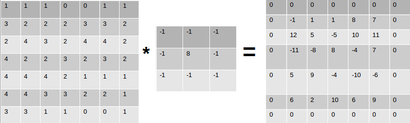
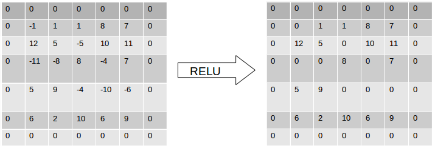
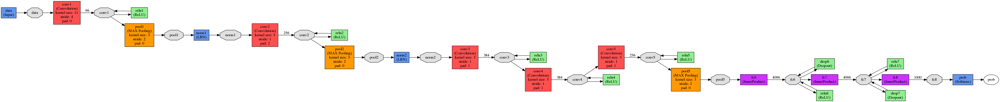
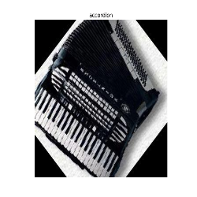
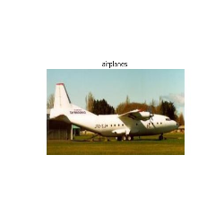
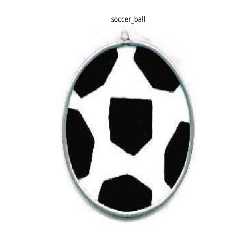
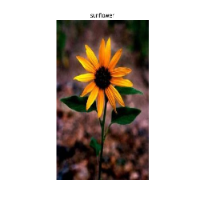

To classify, recognize and localize objects in an image is a hot topic in Computer Vision and throughout the years various models have been established for the same. My previous post on Bag of Visual Words Model for Image Classification and Recognition illustrates one such model. Today I write about Convolutional Neural Networks and how to implement them in Caffe. and how to train a CNN for your own dataset. We will be using the standard dataset, but you can organize any other/personal dataset in a similar fashion.
Basics of CNN :¶
A typical Convolutional Neural Net or CNN, is a feed-forward neural net, with the input being an image. Its’ major objective it to establish a hierarchy of spatial features present in an image using which it is able to classify. The architecture of the net comprises of convolutional layers, pooling layers , activation layer, and fully connected layers.
One can refer this post by Andrej Karpathy to understand the intricate details of a ConvNet.

Convolution Layer : CONV
The primary operator is a convolution operation. For a 1-D signal it is expressed as
However, an image is a 2D signal (stored as a 2D matrix). To convolve an image, we use a convolution kernel, which is simply a 2D matrix.
Here’s an example of how it works

For this 7 x 7 matrix, and a kernel of 3 x 3, the kernel will slide over the matrix one column, at a time. Once it reaches the end of the matrix (columnwise), it’ll shift to the next row. At every position, the dot product is computed.
If the kernel is overlapped with the (0 , 0) position , we find the dot product of
which essentially is :
\(1\times-1 + 1\times-1 + 1\times-1 + 3\times-1 + 2\times8 + 2\times-1 + 2\times-1 + 4\times-1 + 3\times-1 = -1\)
Similarly, assume an input image - \(I\) is of Size \((200 \text{ x } 200)\), and we have a kernel - \(k\) of size \((10 \text{ x } 10)\). The convolution of this kernel over this image is to basically, take the kernel and slide it over the image column by column, row by row. Initially the kernel is placed at \(I[0, 0]\). Therefore the kernel covers a region of \(10 \text{ x } 10\) (size of kernel) starting from \(I[0, 0] \text{ to } I[10,10]\). Once the dot product (convolution) is computed over this pixel region, the kernel is shifted by one column to the right. Now the kernel occupies an image region of \(I[0,1 ] \text{ to } I[10, 11]\) and so on.

A series of convolution operations take place at every layer, which extrapolates the pertinent information from the images. At every layer, multiple convolution operations take place, followed by zero padding and eventually passed through an activation layer and what is outputted is an Activation Map.
Filters and Stride
An image can be represented as a 3D array. The dimension being \(rows, cols, depth\). The ‘depth’ refers to the channels of the image, namely \(\text{red, green and blue}\). Hence, a color RGB image of size \(200 \text{ x } 200\) is actually of size \(200 \text{ x } 200 \text{ x } 3\). To convolve this image, we need a kernel that not only convolves spatially, i.e along the rows and columns but also reaches out to the values in all the channels. Hence, the kernel used will be of a size \(k = 10 \text{ x } 10 \text{ x } 3\). Why 3? Because this will convolve through the depth of the image. The filter depth must be same as the depth of the input from the previous layer. Each filter can be moved over the image, column by column and row by row -> this means that the stride is 1. Inshort, The number of pixels skipped whilst the filter traverses the image is stride. One can have a filter with stride ‘s’, implying that it’ll skip ‘s’ rows/columns while moving towards the other end of the image, convolving at each step.
Activation and Pooling
An activation function basically defines the output of the neuron for the given input. Take a simple Hebbian Learning example . An activation function will return \(1\) if input is \( > 0\) and return \(0\) otherwise. The value of input being greater that 0, is nothing but a threshold value. Instead of 0, any other value can also act as a threshold. In ConvNets, a the popular activation function used is a Rectifier or RELU.
This means that the output of the convolution is thresholded at 0. All positive values are returned as is and all negative values are made 0.
For our above example, if the convolution output is passed to the Rectifier unit, it’ll set all negative values to zero.

On the other hand, the pooling operation is used to down-sample / reduce the activation map. This essentially reduces the volume of the middle-stages output. The output size is computed the same way as computed in the CONV layer. An important thing to note is that is that during the convolution layer, there is a rapid reduction in the dimensionality of the input. To maintain it at a constant size through multiple CONV layers,zero padding is used. Zero padding will pad the image with zeros on its boundaries making it of the same size as the input. It is in the pooling layer where the size reduction takes place.
Implementation with Caffe¶
Caffe is a framework for deep learning, very popular for its simplicity in implementing CNN’s. It has been developed by the Berkely Vision & Learning Center. You can use a CPU as well as a GPU mode. It is widely known that when it comes to matrix and other such image operations , most of which can be done in parallel, GPU’s triumph over CPU’s. I used my CPU machine to train a limited Caltech101 dataset, and it went on for 3 days.
Setting Up
The example covers a classification tutorial with Caffe and your own dataset. Before starting off, it is important that Caffe and the following modules are setup.
Caltech101 limted dataset : This comprises of 101 object categories which can be used to test and learn classification. You can download and extract the dataset in the working directory.
My Pre-Trained Caltech101 Model : Incase you are low on computing power, or would just like to test the code, you can simply download my pretrained network.
Preparing LMDB format data
This article will now cover how to make a custom dataset , and train it using caffe. There are constraints, wherein caffe uses an lmdb data format, and it is important to convert your dataset into the respective formats.
Next is converting the images into an lmdb format. The caffe documentation mentions to generate a txt file comprising of the image path with its associated class number. You can write a simple python script listing contents of your training and testing directories into such text files
<path_to_caltech101>/limited/train/sunflower/image_0020.jpg 0
<path_to_caltech101>/limited/train/Motorbike/image_0033.jpg 1
<path_to_caltech101>/limited/train/soccer_ball/image_0042.jpg 4
<path_to_caltech101>/limited/train/accordion/image_0258.jpg 6
<path_to_caltech101>/limited/train/dollar_bill/image_0673.jpg 2
<path_to_caltech101>/limited/train/airplanes/image_0050.jpg 3
Once done, use the Caffe convert_imageset to convert these images into the leveldb/lmdb data format. The default backend option is an lmdb backend. The convert_imageset can be found at caffe/build/tools.
./convert_imageset --resize_height=200 --resize_width=200 --shuffle $PATH_TO_IMAGESET $PATH_TO_TEXT_FILE_CRAEATED_ABOVE.txt $OUTPUT_LMDB_LOCATION
Or simply change the paths and location inside the caffe/examples/imagenet/create_imagnet.sh file
Eventually your working directory will comprise of a train LMDB directory and a test LMDB directory.
|- src
|- train_lmdb_folder
|- test_lmdb_folder
Defining the Network Architecture:
Caffe network architectures are very simple to define. Create a file “model.prototxt” and define the network architecture as follows. We will be using the AlexNET model (winner of ImageNet challenge 2012). Given below is a representation of how the net looks like.

Click here and zoom to view it
To define the architecture, open the model.prototxt file. The model begins with a net name :
name : "NameoftheNET"
Then sequentially start defining layers. First comes the data layer. Any layer that needs to be defined has a few mandatory parameters, that help in the definition of the neural net structure. To begin with, each layer is associated with a type (data, conv, relu, pool, etc) and its location - whether it on top of a previous layer, and beneath the next layer. Similarly, the data layer is serves as the input to the ConvNet.
layer {
name: "data"
type: "Data"
top: "data"
top: "label"
include {
phase: TRAIN
}
transform_param {
mirror: true
crop_size: 200
mean_file: "mean.binaryproto"
}
data_param {
source: "path - to - train_lmdb_folder"
batch_size: 256
backend: LMDB
}
}
As seen, the next layer is a conv layer. Defining layers in Caffe is quite straightforward. Each convolutional layer has a number of required and optional parameters. The required parameters involve num_inputs i.e. input size, and the kernel size. Optional parameters comprise of strides, padding width, etc.
layer {
name: "conv1"
type: "Convolution"
bottom: "data"
top: "conv1"
....
....
....
convolution_param {
num_output: 96
kernel_size: 11
stride: 4
...
...
...
}
}
Moving on, we talked about Pool and ReLU layers before as an integral part of ConvNets. Here’s how to define them.
layer{ layer{
name: "relu1" name: "pool1"
type: "ReLU" type: "Pooling"
bottom: "conv1" bottom: "norm1"
top: "conv1" top: "pool1"
} pooling_param{
pool: MAX # MAX POOL algorithm
kernel_size : 3
stride: 2
}
A ReLU will simply activate the convolution layer output and essentially threshold it to 0. (refer Rectifier activation function). Whereas the pooling will reduce the size of the output. AlexNet also uses a normalization layer, which is not much used nowadays. Similarly, one can keep defining layers in order according to the architecture you want. Lastly, each ConvNet has a fully connected layer, where the input is a column vector ( 1 D).
layer {
name: "loss"
type: "SoftmaxWithLoss"
bottom: "fc8"
bottom: "label"
top: "loss"
}
You can view the complete AlexNet architecture : gist
Training your data:
Training can be done in either ways. You can write a python script (which I will update to the blog in a few days) or you can use the caffe tool to do so. For now, I’ll be explaining w.r.t the caffe tool which can be found in $caffe_root_dir/build/tools/caffe
Once the network architecture has been fixed, all your training lmdb files created the next step is to define the Caffe Solver, defining the learning rate, momentum, solving mode (either CPU or GPU), and path for saving snapshots of the model.
net: "model.prototxt"
base_lr: 0.01
lr_policy: "step"
gamma: 0.1
stepsize: 100000
display: 5
max_iter: 4500
momentum: 0.9
weight_decay: 0.0005
snapshot: 1000
snapshot_prefix: "snapshots1/caltechNET_train"
solver_mode: CPU
Make sure that the solver contains the correct name of the neural net model.
Computing Image means : The AlexNet model requires to subtract each image instance from the mean. You can refer to the caffe_root_dir/examples/imagenet/make_imagenet_mean.sh file to compute the mean.
The model, solver, means file and lmdb imagesets have been made. Next, is to sit and train the model. This can be done using the caffe executable file.
$caffe_root_dir/build/tools/caffe train --solver=solver.prototxt
Literally, sit back and enjoy ! Your snapshots directory will get updated with the model snapshots as and when.
Testing:
The final trained net is available in
snapshots/<file_iter_number>.caffemodel file. There are a few tricks to test a particular image.
Firstly, it is important that we map the training classes to their respective class names. If you see above, in the part where the data was being prepared, we made a txtfile of the following pattern
<path_to_caltech101>/limited/train/sunflower/image_0020.jpg 0
The class ‘sunflower’ has been mapped to 0. and so on with other classes.
| Class name | Mapped to class number |
|---|---|
| sunflower | 0 |
| Motorbike | 1 |
| dollar_bill | 2 |
| airplanes | 3 |
| soccer_ball | 4 |
| Faces | 5 |
| accordion | 6 |
Next, the caffe model needs to be loaded.
>>> net = caffe.Classifier("path_to_model.prototxt", "snapshot_file.caffemodel",
mean=np.load('means.npy').mean(1).mean(1),
channel_swap=(2,1,0),
raw_scale=255,
image_dims=(200, 200))
>>> im = caffe.io.load_image("path_to_image")
>>> out = net.predict([im])
>>> class_id = out[0].argmax() # this returns the class id or the class number
...
...
>>> print classname[class_id] # to print the name of the class
Some tricks :
There may be some cases where the means file is stored as a means.binaryproto. There is a quick way to convert it to a npy file. Refer issue #808 for the conversion of .binaryproto to .npy files.
>>> # solution github issue 808 by @mafiosso
>>> channels = 3
>>> blob = caffe.io.caffe_pb2.BlobProto()
>>> with open('mean.binaryproto', 'rb') as f:
blob.ParseFromString(f.read())
>>> means = blob.data
>>> means = np.asarray(means)
>>> print means.shape
>>> size = int(200) # size of image.
>>> means = means.reshape(channels,size, size)
>>> np.save("means.npy", means)
It is highly recommended that you use GPU’s to tarin networks. However, feel free to experiment with your personal computers. Works just fine !
Classification results¶
The Caltech101 dataset limited directory already has a split of data into train and test.
There are a few snaps of outputs when the model was tested on the limited version of the dataset .




So, we have completed the tutorial on how to create a custom dataset and train it using caffe. Now you can implement this and train any dataset you want. I would recommend reading up on the references to get a better understanding of ConvNets.
I will keep updating this article with newly pretrained models and adding more about python interfacing with Caffe. Till then, have fun implementing CNN’s.
References:¶
[1] Convolutional Neural Networks for Visual Recognition - CS231n Stanford
[2] Berkely Vision Lab - Caffe
[3] ImageNet tutorial - Caffe Docs
[4] AlexNet Paper